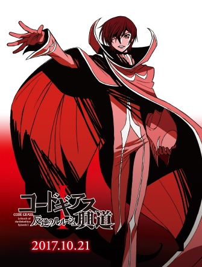
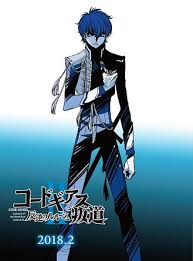
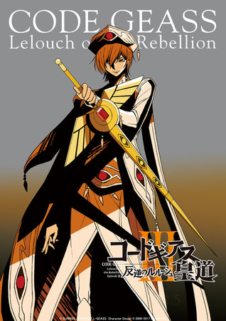
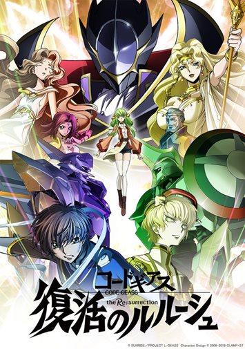
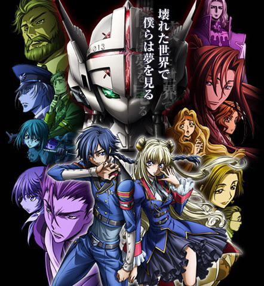
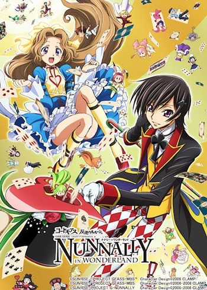
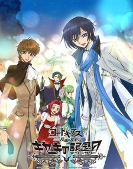

Series


Movies




Spin-off



written by Ichirō Ōkouchi
In the year 2010, the Holy Empire of Britannia is establishing itself as a dominant military nation, starting with the conquest of Japan. Renamed to Area 11 after its swift defeat, Japan has seen significant resistance against these tyrants in an attempt to regain independence.
Lelouch Lamperouge, a Britannian student, unfortunately finds himself caught in a crossfire between the Britannian and the Area 11 rebel armed forces. He is able to escape, however, thanks to the timely appearance of a mysterious girl named C.C., who bestows upon him Geass, the "Power of Kings." Realizing the vast potential of his newfound "power of absolute obedience," Lelouch embarks upon a perilous journey as the masked vigilante known as Zero, leading a merciless onslaught against Britannia in order to get revenge once and for all.
Code Geass: Hangyaku no Lelouch is an original anime series by Sunrise animation studio with original character designs by the all-female Japanese manga artist group Clamp. Manga and light novels based off the show have been published by Kadokawa Shoten. The show has sold millions of DVDs and Blu-ray volumes and is extremely popular in both Japan and North America. The show is known for its multi-genre appeal and for its diverse cast of characters who face many moral dilemmas over the course of the series.
The series won: "The Best Anime TV Series" award at the 2007 Tokyo International Anime Fair, "The Best TV animation" award at the twelfth Animation Kobe, and "The Most Popular Anime" award at the Animage 's 29th Annual Anime Grand Prix.
The series was rebroadcasted during October 2021 on the Animeism programming block to celebrate its 15th anniversary.
Nunnally vi Britannia (ナナリー・ヴィ・ブリタニア, Nanarī Vui Buritania), is one of the main supporting characters of Code Geass. She was formerly a Princess of the Holy Britannian Empire and the Eleventh Prince Lelouch vi Britannia's younger sister. Additionally, she was 87th in line to the imperial throne and the final Viceroy of Area 11.
code.geass@gmail.com
09123456789
Copyright @ CS ELEC1. Made with by Jhan Michael Sanchez